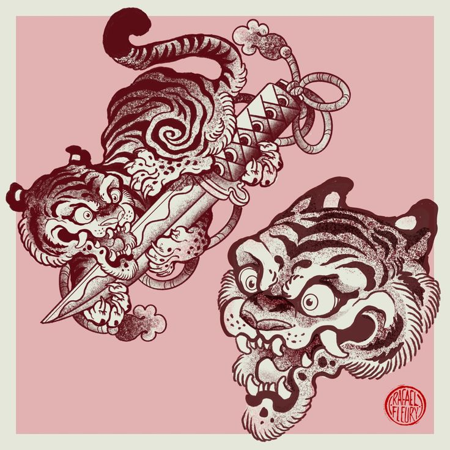
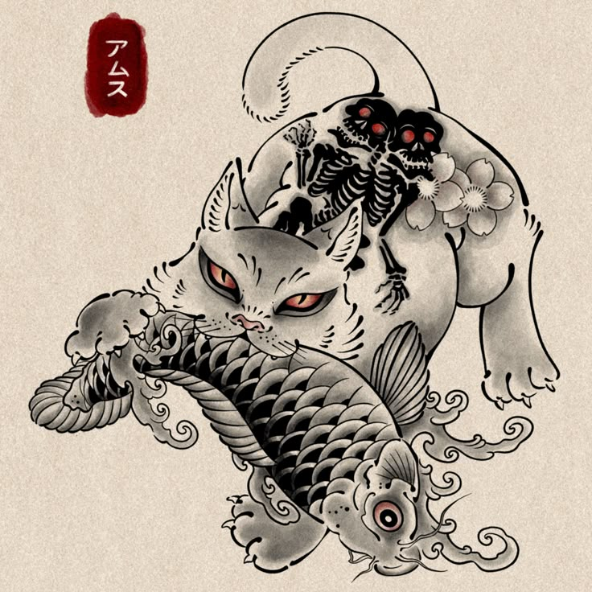
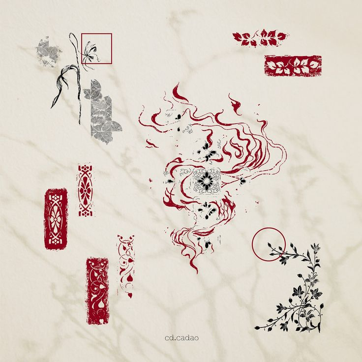
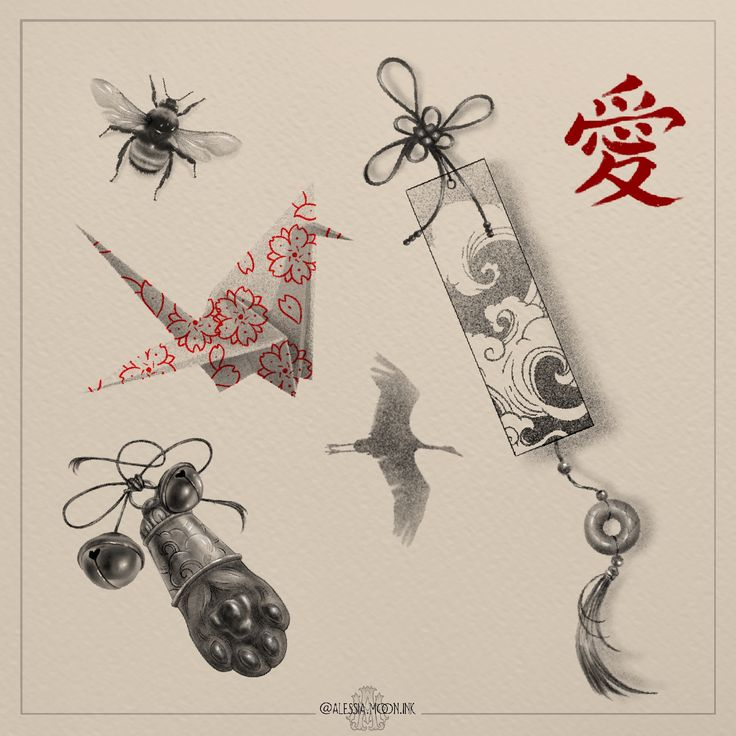
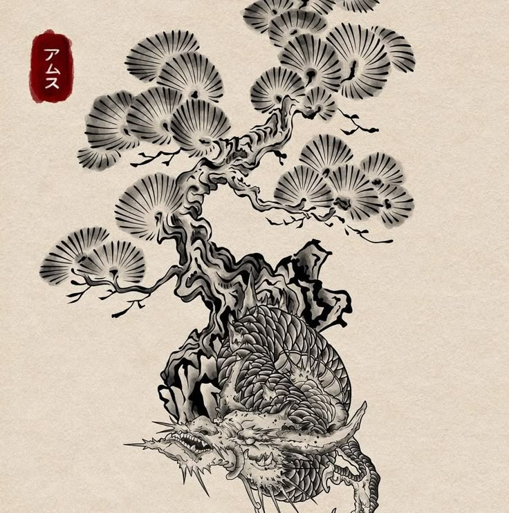
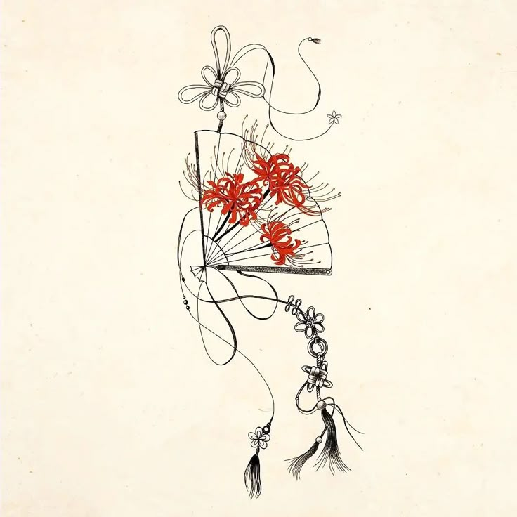
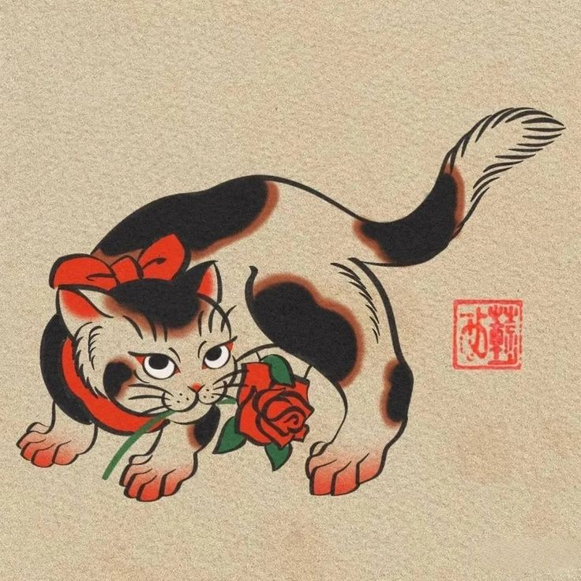
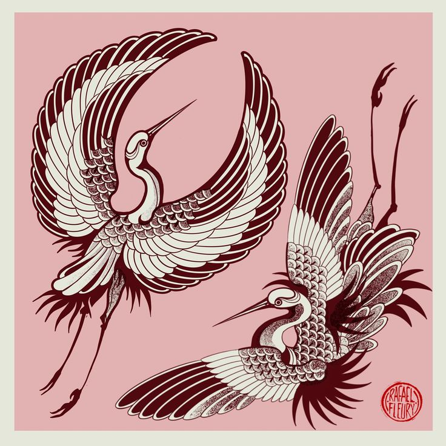

Artists
Flash Gallery
Culture
Forum
Newsletter
Flash Gallery

By Artist Rafael Fleury

By Artist Ams Thatcher

By Artist Ca dao — Vietnam

By Alessia Moon Ink

By Artist Ams Thatcher

From Studio "Tattoo of Japan"

By Artist Vin

By Artist Rafael Fleury